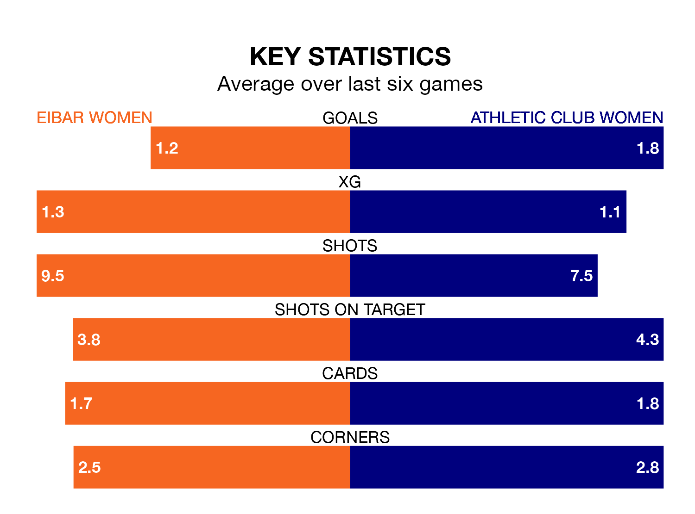

Athletic Club Women visit Eibar Women at Instalaciones de Unbe on early Sunday on the back of seven consecutive wins in Liga F.
It means Athletic Club have picked up the maximum 21 points from their last seven games, and they face an Eibar side who also won their last match, and have collected 10 points from the last possible 21.
In Adriana Nanclares Romero, Athletic Club can rely on one of the league's safest pair of hands. She has kept eight clean sheets in her 17 appearances this season, and only one other 'keeper – Barcelona Women's Catalina Thomas Coll Lluch – has been able to prevent the opposition scoring on more occasions in Liga F.
In Eibar's net, María Miralles Gascón has six clean sheets in 19 games. She has conceded a goal every 90 minutes, 20% more often than the 109 minutes between goals for Nanclares Romero.
With 17 goals in 23 games so far this season, the hosts are the league's second-lowest scorers with 0.7 goals per game. And they are conceding more than average, letting in 38 goals at a rate of 1.7 per game.
The away team are also below average scorers, with 1.2 goals per game, compared to a league average of 1.6. They have conceded 1.1 goals per game.
In the last five years, Eibar and Athletic Club have played each other on five occasions. Eibar won one of them and Athletic Club the other.
On average, Eibar scored 1.0 goal and Athletic Club 2.4 in those matches.
Their last meeting was on January 7, when Athletic Club won 2-0 at home.
Eibar are 11th in the table after 23 games, of which they have won six and drawn five, earning 23 points.
Athletic Club are five places ahead of Eibar in sixth, with 13 wins and two draws putting them on 41 points.
Eibar's last match was on April 13, a 3-0 win against Sevilla Women, with Andrea Abigail Alvarez Donis (two) and Yolanda Aguirre Gutiérrez (own goal) getting the goals for Eibar.
Athletic Club beat Atletico Madrid Women 1-0 last time out, on April 14, with Clara Pinedo Castresana on the scoresheet.
Updated: 11:31 (UTC), 15/04/24